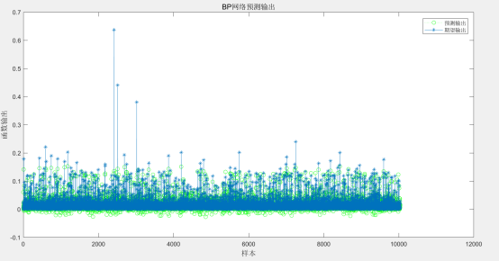
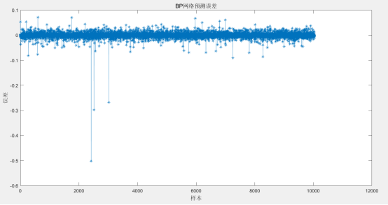
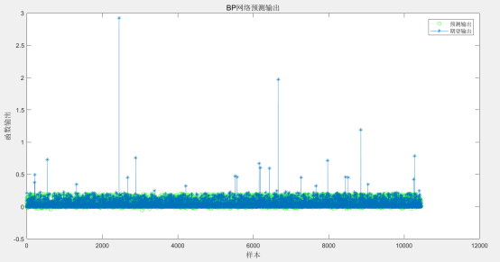
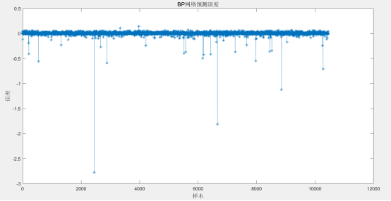

图 1. 章庄隧道出口预测输出和期望输出图

图 2. 章庄隧道出口预测误差图
由图1可知，章庄隧道出口预测输出和期望输出结果基本吻合，走势基本一致。由图2可知预测数据和真实数据两者的误差基本在-0.05~0.05之间，误差范围较小，表明神经网络预测结果基本满足要求。

图 3. 章庄隧道入口预测输出和期望输出图

图 4. 章庄隧道入口预测误差图
由图3可知，章庄隧道入口预测输出和期望输出结果基本吻合，走势基本一致。由图4可知预测数据和真实数据两者的误差基本在0.00附近，误差范围较小，表明神经网络预测结果基本满足要求。